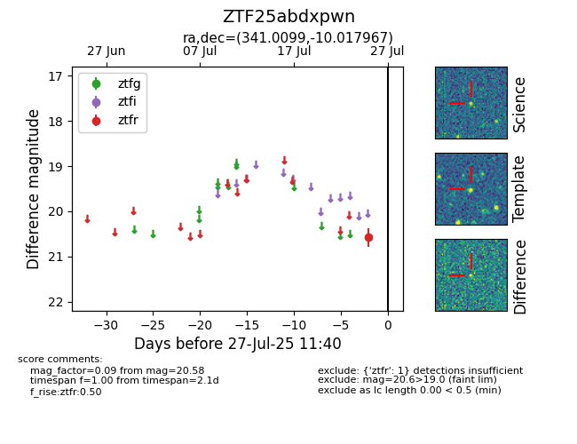

Target ZTF25abdxpwn at 2025-07-27 11:40, see:
FINK: fink-portal.org/ZTF25abdxpwn
Lasair: lasair-ztf.lsst.ac.uk/objects/ZTF25abdxpwn
ALeRCE: alerce.online/object/ZTF25abdxpwn
alt names
ZTF25abdxpwn (ztf,fink)
coordinates:
equatorial (ra, dec) = (341.0099,-10.01797)
galactic (l, b) = (56.4927,-55.46534)
photometry
last ztfr=20.58
1 ztfr detections
